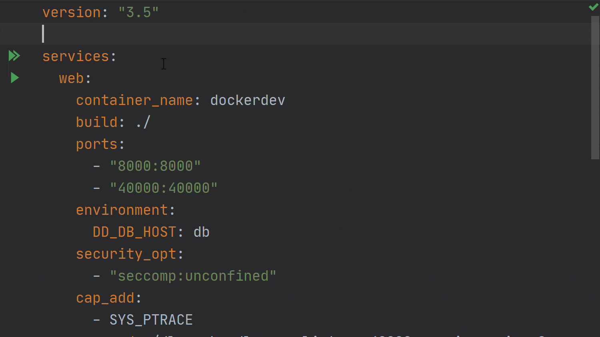

在 GoLang 中使用 Docker Compose 运行 Go 应用程序
今天，我们将继续有关如何使用 Docker 运行 和调试 Go 应用程序 的系列文章。
在本文中，我们将使用 Docker Compose 运行和调试我们的应用程序。对于本文，我们将使用此处的源代码 ，在开始之前切换到 compose 分支 。
使用 Docker Compose 运行 Go 应用程序
让我们从使用 Docker Compose 运行应用程序开始。
查看我们已经创建的项目，可以在代码仓库中找到 docker-compose.yaml 文件：
version: "3.5"
services:
web:
container_name: dockerdev
build: ./
ports:
- "8000:8000"
environment:
DD_DB_HOST: db
command: /server
depends_on:
- db
db:
container_name: dockerdev-db
image: postgres:12.2-alpine
ports:
- "5432:5432"
environment:
POSTGRES_USER: goland
POSTGRES_PASSWORD: goland
POSTGRES_DB: goland
volumes:
- ./init.sql:/docker-entrypoint-initdb.d/init.sql
在数据库部分，我们需要创建一个名为 init.sql 的新文件。该文件的内容用于设置服务运行所需的数据库。
最后，让我们在 main.go 文件中运行 Sync packages of <project> 来 quick-fix，以下载 pgx
库并运行该应用程序。注意：如果你的模块缓存中还没有 pgx 的 4.5.0 版本，则需要执行此步骤。
运行基于 Docker Compose 的应用程序类似于其他 Run Configurations。单击 docker-compose.yaml 中 services 指令旁边的双绿色箭头按钮。要仅运行一项服务，请点击要运行的服务类型旁边的绿色箭头，例如上面的示例配置中的 web 或 db。
配置运行后，在 Docker 节点下的 Services Tool 窗口中会有一个名为 Compose 的新节点。这里会显示正在运行的每个 Docker Compose 服务套件。
可以浏览每个服务定义，并为每个服务显示所有正在运行的实例。Docker Compose 服务中可用于容器的信息与常规 Docker 容器可使用的信息相同。
注意：如果你要启动较重的服务（例如数据库服务器），或者这些服务需要一些初始化时间，则我们的 Go 程序服务需要考虑这些服务的启动时间。
在我们的示例代码中，这是使用 getDBConnection 函数处理的，该函数尝试在放弃之前尝试几次以指数退避的方式连接到数据库。
重启动 Docker Compose 服务
更改我们的代码后，我们需要重新启动服务以重新加载这些更改。目前，使用 IDE 重新启动它有点复杂，因为这样做需要你执行以下步骤：
- 执行
Run | Edit Configurations并复制一份现有的 Docker Compose 配置； - 编辑新创建的配置以添加重新启动的服务的名称，并启用
–build选项以强制在运行镜像之前对其进行重建；
完成这些步骤之后，你可以停止现有服务，删除现有容器，然后启动新创建的配置。

Pro tip：你可以使用 “Delete” 功能同时停止和删除服务。
使用 Docker Compose 调试 Go 应用程序
要使用 Docker Compose 调试应用程序，我们需要同时更改 Dockerfile 和 docker-compose.yaml 文件。我们可以切换到代码库的 compose-debug 分支 ，这样更容易理解。
现在，docker-compose.yaml 文件如下所示：
version: "3.5"
services:
web:
container_name: dockerdev
build: ./
ports:
- "8000:8000"
- "40000:40000"
environment:
DD_DB_HOST: db
security_opt:
- "seccomp:unconfined"
cap_add:
- SYS_PTRACE
command: /dlv --headless --listen=:40000 --api-version=2 exec /server
depends_on:
- db
db:
container_name: dockerdev-db
image: postgres:12.2-alpine
ports:
- "5432:5432"
environment:
POSTGRES_USER: goland
POSTGRES_PASSWORD: goland
POSTGRES_DB: goland
volumes:
- ./init.sql:/docker-entrypoint-initdb.d/init.sql
注意：这里的重要部分是 security_opt 和 cap_add 属性，因为它们允许调试器在 Docker 环境中运行。
运行此操作类似于运行常规 Docker Compose 配置。我们可以使用 Go Remote 配置连接到容器，调试器会话将像调试常规配置一样开始。

今天我们的文章到此结束。我们已经讨论了如何使用 Docker Compose，以及如何从 GoLand 运行和调试我们的应用程序。
在下一篇文章中，我们将介绍如何在 IDE 中使用 Kubernetes，以及如何使用它运行和调试我们的应用程序。
原文链接：https://blog.jetbrains.com/go/2020/05/08/running-go-applications-using-docker-compose-in-goland/
作者：Florin Pățan
翻译：Go语言中文网 polaris